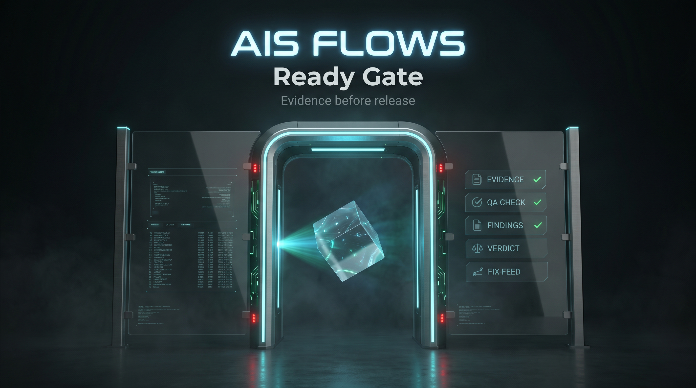
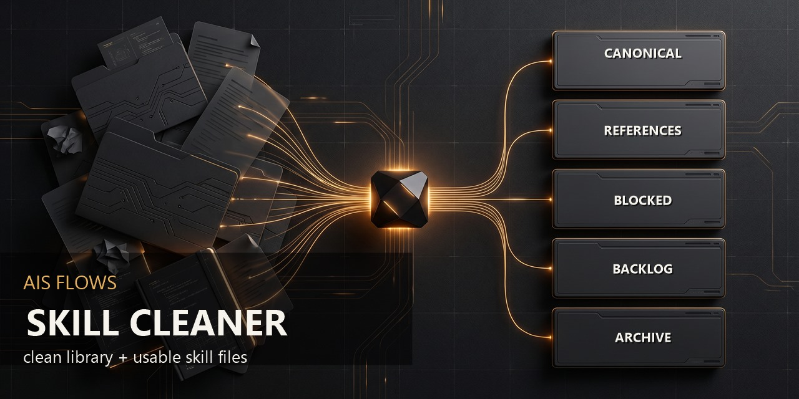

Выпущенные скиллы
ProoflineПакет из 5 skill для проверки готовности продукта с понятным отчётом для владельца и агента.
 Открыть релиз
Открыть релиз
Открыть релиз
Ready GateОдин skill для проверки качества handoff перед тем, как продукт назвать готовым.

Открыть релиз
Skill CleanerПакет из 6 skill: превращает хаотичные папки агентских скиллов в чистую рабочую библиотеку.

Открыть релиз